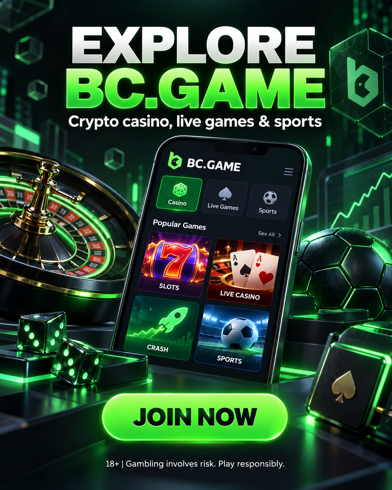

Casino y juegos en vivo
Incluye tragamonedas, juegos de mesa, títulos tipo crash y mesas con crupier. La disponibilidad puede variar por región y proveedor.
GUÍA INDEPENDIENTE · MÉXICO · 18+
Una introducción clara a la plataforma, sus juegos, el uso de criptomonedas y los puntos que debes revisar antes de depositar.
Enlace de afiliado: si te registras mediante este enlace, el autor puede recibir una comisión sin coste adicional para ti.

RESUMEN
Incluye tragamonedas, juegos de mesa, títulos tipo crash y mesas con crupier. La disponibilidad puede variar por región y proveedor.
Antes de enviar fondos, comprueba la red, la moneda, las comisiones y el importe mínimo. Una transferencia a una red incorrecta puede ser irreversible.
La plataforma puede solicitar verificación de identidad y ubicación. Revisa los requisitos antes de depositar y utiliza siempre datos reales.
LISTA DE CONTROL
El juego debe tratarse como entretenimiento, nunca como una forma de ingreso. Define un presupuesto que puedas perder y revisa las condiciones completas.
PREGUNTAS FRECUENTES
No. Las promociones pueden cambiar y suelen tener requisitos de depósito, apuesta, tiempo y elegibilidad. Consulta siempre las condiciones vigentes en la plataforma.
No existe una ganancia garantizada. Los juegos de azar implican riesgo y la pérdida del dinero depositado es posible.
No. Es una guía independiente que contiene un enlace de afiliado. La información oficial y las condiciones actuales se encuentran en el sitio del operador.
SOLO PARA ADULTOS
Accede únicamente si el juego online está permitido en tu ubicación y puedes asumir el riesgo de perder tu depósito.